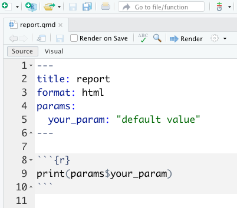

Chapter 10 Literate programming
Literate programming is the practice of mixing code and descriptive writing in order to execute and explain a data analysis simultaneously in the same document. The targets package supports literate programming through tight integration with Quarto, R Markdown, and knitr. It is recommended to learn one of these three tools before proceeding with the following chapter.
There are two kinds of literate programming in targets:
- A literate programming source document (or Quarto project) that renders inside an individual target. Here, you define a special kind of target that runs a lightweight R Markdown report which depends on upstream targets.
- Target Markdown, an overarching system in which one or more Quarto or R Markdown files write the
_targets.Rfile and encapsulate the pipeline.
10.1 Literate programming within a target
10.1.1 R Markdown targets
Here, literate programming serves to display, summarize, and annotate results from upstream in the targets pipeline. The document(s) have little to no computation of their own, and they make heavy use of tar_read() and tar_load() to leverage output from other targets.
As an example, let us extend the walkthrough example chapter with the following R Markdown source file report.Rmd.

This document depends on targets fit and hist. If we previously ran the pipeline and the data store _targets/ exists, then tar_read() and tar_load() will read those targets and show them in the rendered HTML output report.html.

With the tar_render() function in tarchetypes, we can go a step further and include report.Rmd as a target in the pipeline. This new targets re-renders report.Rmd whenever fit or hist changes, which means tar_make() brings the output file report.html up to date.
library(tarchetypes)
target <- tar_render(report, "report.Rmd") # Just defines a target object.
target$command$expr[[1]]
#> tarchetypes::tar_render_run(path = "report.Rmd", args = list(input = "report.Rmd",
#> knit_root_dir = getwd(), quiet = TRUE), deps = list(fit,
#> hist))tar_render() is like tar_target(), except that you supply the file path to the R Markdown report instead of an R command. Here it is at the bottom of the example _targets.R file below:
# _targets.R
library(targets)
library(tarchetypes)
source("R/functions.R")
list(
tar_target(
raw_data_file,
"data/raw_data.csv",
format = "file"
),
tar_target(
raw_data,
read_csv(raw_data_file, col_types = cols())
),
tar_target(
data,
raw_data %>%
mutate(Ozone = replace_na(Ozone, mean(Ozone, na.rm = TRUE)))
),
tar_target(hist, create_plot(data)),
tar_target(fit, biglm(Ozone ~ Wind + Temp, data)),
tar_render(report, "report.Rmd") # Here is our call to tar_render().
)When we visualize the pipeline, we see that our report target depends on targets fit and hist. tar_render() automatically detects these upstream dependencies by statically analyzing report.Rmd for calls to tar_load() and tar_read().
# R console
tar_visnetwork()
10.1.2 Quarto targets
tarchetypes >= 0.6.0.9000 supports a tar_quarto() function, which is like tar_render(), but for Quarto. For an individual source document, tar_quarto() works exactly the same way as tar_render(). However, tar_quarto() is more powerful: you can supply the path to an entire Quarto project, such as a book, blog, or website. tar_quarto() looks for target dependencies in all the source documents (e.g. listed in _quarto.yml), and it tracks the important files in the project for changes (run tar_quarto_files() to see which ones).
10.1.3 Parameterized documents
tarchetypes functions make it straightforward to use parameterized R Markdown and parameterized Quarto in a targets pipeline. The next two subsections walk through the major use cases.
10.1.4 Single parameter set
In this scenario, the pipeline renders your parameterized report one time using a single set of parameters. These parameters can be upstream targets, global objects, or fixed values. Simply pass a params argument to tar_render() or an execute_params argument to tar_quarto(). Example:
# _targets.R
library(targets)
library(tarchetypes)
list(
tar_target(data, data.frame(x = seq_len(26), y = letters))
tar_quarto(report, "report.qmd", execute_params = list(your_param = data))
)Internally, the report target runs:
# R console
quarto::quarto_render("report.qmd", params = list(your_param = your_target))where report.qmd looks like this:

See tar_quarto() examples and tar_render() examples for more.
10.1.5 Multiple parameter sets
In this scenario, you still have a single report, but you render it multiple times over a grid of parameters. This time, use tar_quarto_rep() or tar_render_rep(). Each of these functions takes as input a grid of parameters with one column per parameter and one row per parameter set, where each parameter set is used to render an instance of the document. In other words, the number of rows in the parameter grid is the number of output documents you will produce. Below is an example _targets.R file using tar_render_rep(). Usage with tar_quarto_rep() is the same18.
# _targets.R
library(targets)
library(tarchetypes)
tar_option_set(packages = "tibble")
list(
tar_target(x, "value_of_x"),
tar_render_rep(
report,
"report.Rmd",
params = tibble(
par = c("par_val_1", "par_val_2", "par_val_3", "par_val_4"),
output_file = c("f1.html", "f2.html", "f3.html", "f4.html")
),
batches = 2
)
)where report.Rmd has the following YAML front matter:
title: report
output_format: html_document
params:
par: "default value"and the following R code chunk:
print(params$par)
print(tar_read(x))tar_render_rep() creates a target for the parameter grid and uses dynamic branching to render the output reports in batches. In this case, we have two batches (dynamic branches) that each produce two reports (four output reports total).
# R console
tar_make()
#> ● run target x
#> ● run target report_params
#> ● run branch report_9e7470a1
#> ● run branch report_457829de
#> ● end pipelineThe third output file f3.html is below, and the rest look similar.

For more information, see these examples.
10.2 Target Markdown
Target Markdown, available in targets > 0.6.0, is a powerful Markdown/knitr-based interface for reproducible analysis pipelines.19 With Target Markdown, you can define a fully scalable pipeline from within one or more Quarto or R Markdown reports or projects (even spreading a single pipeline over multiple source documents). You get the best of both worlds: the human readable narrative of literate programming, and the sophisticated caching and dependency management systems of targets.
10.2.1 Access
This chapter’s example Target Markdown document is itself a tutorial and a simplified version of the chapter. There are two convenient ways to access the file:
- The
use_targets()function. - The RStudio R Markdown template system.
For (2), in the RStudio IDE, select a new Quarto or R Markdown document in the New File dropdown menu in the upper left-hand corner of the window.

Then, select the Target Markdown template and click OK to open a copy of the report for editing.

10.2.2 Purpose
Target Markdown has two primary objectives:
- Interactively explore, prototype, and test the components of a
targetspipeline using the Quarto notebook interface or the R Markdown notebook interface. - Set up a
targetspipeline using convenient Markdown-like code chunks.
Target Markdown supports a special {targets} language engine with an interactive mode for (1) and a non-interactive mode for (2). By default, the mode is interactive in the notebook interface and non-interactive when you knit/render the whole document.20. You can set the mode using the tar_interactive chunk option.
10.2.3 Example
The following example is based on the minimal targets project at https://github.com/wlandau/targets-minimal/. We process the base airquality dataset, fit a model, and display a histogram of ozone concentration.
10.2.4 Required packages
This example requires several R packages, and targets must be version 0.6.0 or above.
# R console
install.packages(c("biglm", "dplyr", "ggplot2", "readr", "targets", "tidyr"))10.2.5 Setup
First, load targets to activate the specialized knitr engine for Target Markdown.
```{r}
library(targets)
```Non-interactive Target Markdown writes scripts to a special _targets_r/ directory to define individual targets and global objects. In order to keep your target definitions up to date, it is recommended to remove _targets_r/ at the beginning of the R Markdown document(s) in order to clear out superfluous targets and globals from a previous version. tar_unscript() is a convenient way to do this.
```{r}
tar_unscript()
```10.2.6 Globals
As usual, your targets depend on custom functions, global objects, and tar_option_set() options you define before the pipeline begins. Define these globals using the {targets} engine with tar_globals = TRUE chunk option.
```{targets some-globals, tar_globals = TRUE, tar_interactive = TRUE}
options(tidyverse.quiet = TRUE)
tar_option_set(packages = c("biglm", "dplyr", "ggplot2", "readr", "tidyr"))
create_plot <- function(data) {
ggplot(data) +
geom_histogram(aes(x = Ozone), bins = 12) +
theme_gray(24)
}
```In interactive mode, the chunk simply runs the R code in the tar_option_get("envir") environment (usually the global environment) and displays a message:
#> Run code and assign objects to the environment.Here is the same chunk in non-interactive mode. Normally, there is no need to duplicate chunks like this, but we do so here in order to demonstrate both modes.
```{targets chunk-name, tar_globals = TRUE, tar_interactive = FALSE}
options(tidyverse.quiet = TRUE)
tar_option_set(packages = c("biglm", "dplyr", "ggplot2", "readr", "tidyr"))
create_plot <- function(data) {
ggplot(data) +
geom_histogram(aes(x = Ozone), bins = 12) +
theme_gray(24)
}
```In non-interactive mode, the chunk establishes a common _targets.R file and writes the R code to a script in _targets_r/globals/, and displays an informative message:21
#> Establish _targets.R and _targets_r/globals/chunk-name.R.It is good practice to assign explicit chunk labels or set the tar_name chunk option on a chunk-by-chunk basis. Each chunk writes code to a script path that depends on the name, and all script paths need to be unique.22
10.2.7 Target definitions
To define targets of the pipeline, use the {targets} language engine with the tar_globals chunk option equal FALSE or NULL (default). The return value of the chunk must be a target object or a list of target objects, created by tar_target() or a similar function.
Below, we define a target to establish the air quality dataset in the pipeline.
```{targets raw-data, tar_interactive = TRUE}
tar_target(raw_data, airquality)
```If you run this chunk in interactive mode, the target’s R command runs, the engine tests if the output can be saved and loaded from disk correctly, and then the return value gets assigned to the tar_option_get("envir") environment (usually the global environment).
#> Run targets and assign them to the environment.In the process, some temporary files are created and destroyed, but your local file space will remain untouched (barring any custom side effects in your custom code).
After you run a target in interactive mode, the return value is available in memory, and you can write an ordinary R code chunk to read it.
```{r}
head(raw_data)
```The output is the same as what tar_read(raw_data) would show after a serious pipeline run.
head(raw_data)
#> Ozone Solar.R Wind Temp Month Day
#> 1 41 190 7.4 67 5 1
#> 2 36 118 8.0 72 5 2
#> 3 12 149 12.6 74 5 3
#> 4 18 313 11.5 62 5 4
#> 5 NA NA 14.3 56 5 5
#> 6 28 NA 14.9 66 5 6For demonstration purposes, here is the raw_data target code chunk in non-interactive mode.
```{targets chunk-name-with-target, tar_interactive = FALSE}
tar_target(raw_data, airquality)
```In non-interactive mode, the {targets} engine does not actually run any targets. Instead, it establishes a common _targets.R and writes the code to a script in _targets_r/targets/.
#> Establish _targets.R and _targets_r/targets/chunk-name-with-target.R.Next, we define more targets to process the raw data and plot a histogram. Only the returned value of the chunk code actually becomes part of the pipeline, so if you define multiple targets in a single chunk, be sure to wrap them all in a list.
```{targets downstream-targets}
list(
tar_target(data, raw_data %>% filter(!is.na(Ozone))),
tar_target(hist, create_plot(data))
)
```In non-interactive mode, the whole target list gets written to a single script.
#> Establish _targets.R and _targets_r/targets/downstream-targets.R.Lastly, we define a target to fit a model to the data. For simple targets like this one, we can use convenient shorthand to convert the code in a chunk into a valid target. Simply set the tar_simple chunk option to TRUE.
```{targets fit, tar_simple = TRUE}
analysis_data <- data
biglm(Ozone ~ Wind + Temp, analysis_data)
```When the chunk is preprocessed, chunk label (or the tar_name chunk option if you set it) becomes the target name, and the chunk code becomes the target command. All other arguments of tar_target() remain at their default values (configurable with tar_option_set() in a tar_globals = TRUE chunk). The output in the rendered R Markdown document reflects this preprocessing.
tar_target(fit, {
biglm(Ozone ~ Wind + Temp, data)
})
#> Define target fit from chunk code.
#> Establish _targets.R and _targets_r/targets/fit.R.10.2.8 Pipeline
If you ran all the {targets} chunks in non-interactive mode (i.e. pipeline construction mode), then the target script file and helper scripts should all be established, and you are ready to run the pipeline in with tar_make() in an ordinary {r} code chunk. This time, the output is written to persistent storage at the project root.
```{r}
tar_make()
```#> • start target raw_data
#> • built target raw_data
#> • start target data
#> • built target data
#> • start target fit
#> • built target fit
#> • start target hist
#> • built target hist
#> • end pipeline: 0.677 seconds10.2.9 Output
You can retrieve results from the _targets/ data store using tar_read() or tar_load().
```{r}
library(biglm)
tar_read(fit)
```#> Large data regression model: biglm(Ozone ~ Wind + Temp, data)
#> Sample size = 116```{r}
tar_read(hist)
```
The targets dependency graph helps your readers understand the steps of your pipeline at a high level.
```{r}
tar_visnetwork()
```At this point, you can go back and run {targets} chunks in interactive mode without interfering with the code or data of the non-interactive pipeline.
10.2.10 Conditioning on interactive mode
targets version 0.6.0.9001 and above supports the tar_interactive() function, which suppresses code unless Target Markdown interactive mode is turned on. Similarly, tar_noninteractive() suppresses code in interactive mode, and tar_toggle() selects alternative pieces of code based on the current mode.
10.2.11 tar_interactive()
tar_interactive() is useful for dynamic branching. If a dynamic target branches over a target from a different chunk, this ordinarily breaks interactive mode.
```{targets condition, tar_interactive = TRUE}
tar_target(y, x ^ 2, pattern = map(x))
```#> Run targets and assign them to the environment.
#> Error:
#> ! Target y tried to branch over x, which is illegal. Patterns must only branch over explicitly declared targets in the pipeline. Stems and patterns are fine, but you cannot branch over branches or global objects. Also, if you branch over a target with format = "file", then that target must also be a pattern.However, with tar_interactive(), you can define a version of x just for testing and prototyping in interactive mode. The chunk below fixes interactive mode without changing the pipeline in non-interactive mode.
```{targets condition-fixed, tar_interactive = TRUE}
list(
tar_interactive(tar_target(x, seq_len(2))),
tar_target(y, x ^ 2, pattern = map(x))
)
```#> Run targets and assign them to the environment.10.2.12 tar_toggle()
tar_toggle() is useful for scaling up and down the amount of work based on the current mode. Interactive mode should finish quickly for prototyping and testing, and non-interactive mode should take on the full level work required for a serious pipeline. Below, tar_toggle() seamlessly scales up and down the number of simulations repetitions in the example target from https://wlandau.github.io/rmedicine2021-pipeline/#target-definitions. To learn more about stantargets, visit https://docs.ropensci.org/stantargets/.
```{targets bayesian-model-validation, tar_interactive = TRUE}
tar_stan_mcmc_rep_summary(
name = mcmc,
stan_files = "model.stan",
data = simulate_data(), # Defined in another code chunk.
batches = tar_toggle(1, 100),
reps = tar_toggle(1, 10),
chains = tar_toggle(1, 4),
parallel_chains = tar_toggle(1, 4),
iter_warmup = tar_toggle(100, 4e4),
iter_sampling = tar_toggle(100, 4e4),
summaries = list(
~posterior::quantile2(.x, probs = c(0.025, 0.25, 0.5, 0.75, 0.975)),
rhat = ~posterior::rhat(.x)
),
deployment = "worker"
)
```10.2.13 Chunk options
tar_globals: Logical of length 1, whether to define globals or targets. IfTRUE, the chunk code defines functions, objects, and options common to all the targets. IfFALSEorNULL(default), then the chunk returns formal targets for the pipeline.tar_interactive: Logical of length 1 to choose whether to run the chunk in interactive mode or non-interactive mode.tar_name: name to use for writing helper script files (e.g. _targets_r/targets/target_script.R) and specifying target names if the tar_simple chunk option is TRUE. All helper scripts and target names must have unique names, so please do not set this option globally with knitr::opts_chunk$set().tar_script: Character of length 1, where to write the target script file in non-interactive mode. Most users can skip this option and stick with the default_targets.Rscript path. Helper script files are always written next to the target script in a folder with an"_r"suffix. Thetar_scriptpath must either be absolute or be relative to the project root (where you calltar_make()or similar). If not specified, the target script path defaults totar_config_get("script")(default:_targets.R; helpers default:_targets_r/). When you runtar_make()etc. with a non-default target script, you must select the correct target script file either with thescriptargument or withtar_config_set(script = ...). The function willsource()the script file from the current working directory (i.e. withchdir = FALSEinsource()).tar_simple: Logical of length 1. Set toTRUEto define a single target with a simplified interface. In code chunks withtar_simpleequal toTRUE, the chunk label (or thetar_namechunk option if you set it) becomes the name, and the chunk code becomes the command. In other words, a code chunk with labeltargetnameand commandmycommand()automatically gets converted totar_target(name = targetname, command = mycommand()). All other arguments oftar_target()remain at their default values (configurable withtar_option_set()in atar_globals = TRUEchunk).
except the parameter grid argument is called
execute_paramsintar_quarto_rep().↩︎Target Markdown is powered entirely by
targetsandknitr. It does not actually require Markdown, although Markdown is the recommended way to interact with it.↩︎In
targetsversion 0.6.0, the mode is interactive ifinteractive()isTRUE. In subsequent versions, the mode is interactive if!isTRUE(getOption("knitr.in.progress"))isTRUE.↩︎The
_targets.Rfile from Target Markdown never changes from chunk to chunk or report to report, so you can spread your work over multiple reports without worrying about aligning_targets.Rscripts. Just be sure all your chunk names are unique across all the reports of a project, or you set thetar_namechunk option to specify base names of script file paths.↩︎In addition, for
bookdownprojects, chunk labels should only use alphanumeric characters and dashes.↩︎